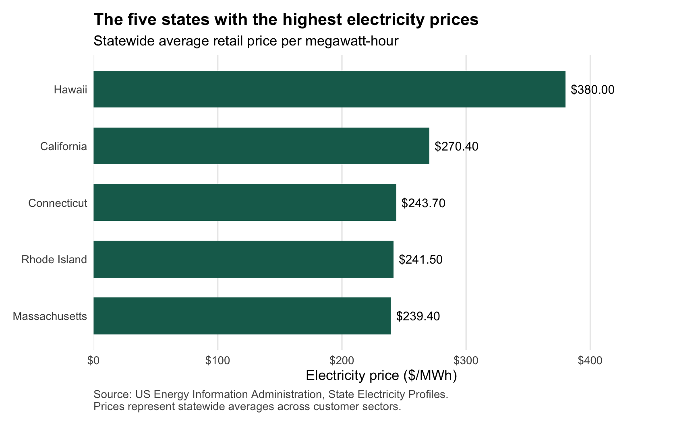
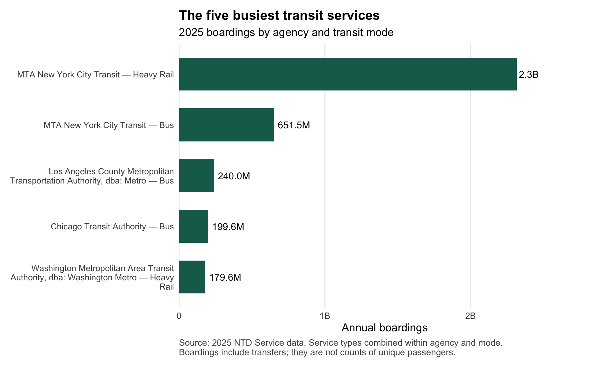
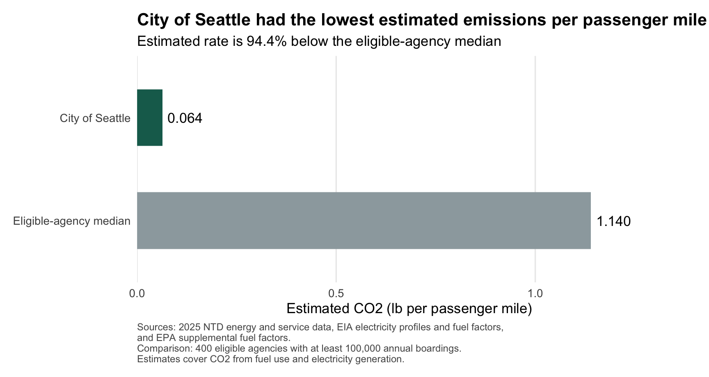
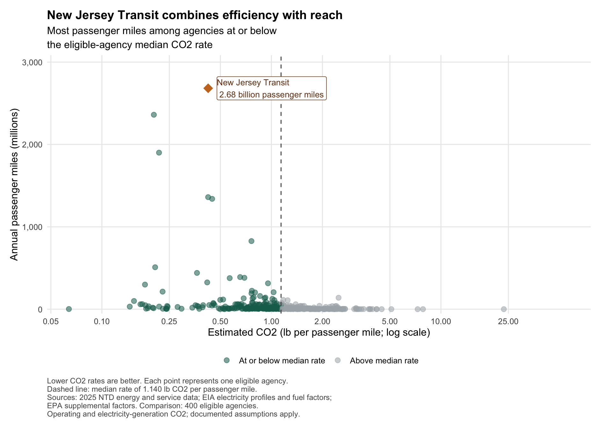

Comparing emissions, passenger activity, and greener transit
Author
Pratistha Regmi
STA 9750 · Mini-Project 02
This project explores how public transit agencies compare in estimated CO₂ emissions and passenger activity. I combine transit energy and service records with state electricity profiles, check the data, and use the results to recognize agencies for efficiency and passenger reach.
The awards at a glance
Which transit agencies stand out when estimated emissions are compared with passenger activity? This project recognizes two different strengths: low emissions per passenger mile and extensive passenger service at a comparatively low emissions rate.
TipGreenest Transit Agency · City of Seattle
City of Seattle had the lowest estimated CO₂ emissions per passenger mile among the eligible agencies. Its rate was approximately 94.4% below the comparison-group median.
“City of Seattle” refers to the specific NTD reporting agency, rather than every transit operator in Seattle.
NoteLow-Carbon Reach Award · New Jersey Transit
New Jersey Transit Corporation provided approximately 2.68 billion passenger miles while maintaining an estimated CO₂ rate below the eligible-agency median.
These awards compare 400 eligible agencies with at least 100,000 annual boardings and the required data coverage. The calculations, award graphics, and limitations appear later in this report.
1 About this project
Public transit can move many people at once, but its environmental impact depends on the energy it uses and the passenger activity it supports. I compare estimated CO₂ emissions across agencies while accounting for differences in passenger activity.
The analysis combines 2025 National Transit Database energy and service records with 2024 state electricity profiles. Before comparing agencies, I check missing values, repeated records, and how the datasets match.
The report moves through data preparation, exploration, emissions estimates, and award selection. I explain the choices and limitations along the way so readers can follow how I reached the results.
The estimates cover the included operating fuels and electricity generation. They do not represent a full lifecycle assessment.
2 Data sources and preparation
I use three sources:
NTD Energy Consumption: reported fuel and electricity use by agency and transit mode.
NTD Service Data: boardings, passenger miles, and agency location information.
EIA State Electricity Profiles: state electricity-generation emissions rates, generation totals, and average retail prices.
I import each dataset separately, check its structure and coverage, and then prepare the records for comparison.
2.1 State electricity profiles
I use the EIA State Electricity Profiles to estimate the CO₂ emissions from generating the electricity that transit agencies use. Electric transit has no tailpipe emissions, but producing the electricity it runs on can still release CO₂. How much depends on how each state generates its electricity.
For each state, I pull the CO₂ emissions rate in pounds per megawatt-hour (MWh), the main source of electricity, the average retail price per MWh, and the total electricity generated that year. The electricity profiles I used cover 2024, while the transit records cover 2025. I use the 2024 rates to estimate emissions from electricity used by transit agencies in 2025.
The state electricity profiles tell me how much CO₂ is released when electricity is generated. The 2025 NTD Energy Consumption report tells me how much fuel and electricity transit agencies used for each mode, such as bus or rail.
The report measures most fuels in gallons, electricity in kilowatt-hours, and hydrogen in kilograms. Later, I estimate CO₂ emissions for the energy sources included in my analysis so I can compare them using a common measure.
The automatic download returned a 403 access error, so I downloaded the official Excel file manually and used that copy for the analysis.
Show R code
load_ntd_energy <-function(){library(readxl)library(httr2)library(tidyverse)library(fs)# Create 'data/mp02' directory if not already present DATA_DIR <- fs::path("data", "mp02") fs::dir_create(DATA_DIR, recurse=TRUE) NTD_ENERGY_FILE <- fs::path(DATA_DIR, "2025_ntd_energy.xlsx")if(!fs::file_exists(NTD_ENERGY_FILE)){library(httr2)request("https://www.transit.dot.gov/") |>req_url_path("sites","fta.dot.gov","files","2026-09","2025 Energy Consumption_260806.xlsx") |>req_headers(`User-Agent`="Mozilla/5.0 (Macintosh; Intel Mac OS X 10.15; rv:149.0) Gecko/20100101 Firefox/149.0") |>req_perform(NTD_ENERGY_FILE) }if(file.info(NTD_ENERGY_FILE)$size <1e4){cat("I was unable to download the NTD Energy File. Please try again.\n")stop("Download failed. Please delete the corrupted file by running `unlink('data/mp02/2025_ntd_energy.xlsx')` and try again.") } to_numeric_fill_0 <-function(x){ x <-if_else(x =="-", NA, x)replace_na(as.numeric(x), 0) }read_excel(NTD_ENERGY_FILE) |>select(-c(`Reporter Type`, `Reporting Module`, `Gallons of Other Fuel`, `Other Fuel Description`)) |>mutate(across(-c(`Agency Name`, `Mode`,`TOS`), to_numeric_fill_0)) |>group_by(`NTD ID`, `Mode`, `Agency Name`) |>summarize(across(where(is.numeric), sum), .groups ="keep") |>mutate(ENERGY =sum(c_across(c(where(is.numeric))))) |>filter(ENERGY >0) |>select(-ENERGY) |>ungroup()}NTD_ENERGY <-load_ntd_energy()
The supplied import code combines the energy records into one row per agency and transit mode. I use those records to estimate emissions later in the report.
The import leaves out the “Other Fuel” category, so the emissions estimates later in the report leave it out too.
2.3 Transit service provided
The energy data tell me how much fuel and electricity each agency used. The 2025 NTD service data help me put that use in context by showing how many times people boarded and how far they traveled.
An unlinked passenger trip counts one boarding. If someone takes a bus and then transfers to a train, that counts as two boardings. Passenger miles add up the distance traveled by each passenger. I use both measures later to compare agencies that serve different numbers of riders and cover different distances.
Show R code
load_ntd_service <-function(){library(httr2)library(tidyverse)library(fs)# Create 'data/mp02' directory if not already present DATA_DIR <- fs::path("data", "mp02") fs::dir_create(DATA_DIR, recurse=TRUE) NTD_SERVICE_FILE <- fs::path(DATA_DIR, "2025_ntd_service.csv")if(!fs::file_exists(NTD_SERVICE_FILE)){library(httr2)request("https://data.transportation.gov/resource/4fir-qbim.csv") |>req_url_query(`$query`=paste("SELECT `_5_digit_ntd_id` AS `NTD_ID`", "`max_agency` AS `AGENCY`","`max_reporter_type` AS `reporter_type`","`max_organization_type` AS `organization_type`","`max_city` AS `city`","`max_state` AS `state`","`mode`","`type_of_service`","`max_primary_uza_code` as `uza_code`","`max_primary_uza_name` as `uza_name`","`max_primary_uza_area_sq_miles` as `uza_sq_miles`","`max_primary_uza_population` as `uza_population`","`max_service_area_sq_miles` as `service_area_sq_miles`","`max_service_area_population` as `service_area_population`","`questionable_record` as `flagged_likely_inaccurate`","`sum_unlinked_passenger_trips_upt` as `total_upt`","`sum_passenger_miles` WHERE caseless_one_of(`report_year`, '2025') limit 50000", sep=",")) |>req_headers(`User-Agent`="Mozilla/5.0 (Macintosh; Intel Mac OS X 10.15; rv:149.0) Gecko/20100101 Firefox/149.0") |>req_perform(NTD_SERVICE_FILE) }if(file.info(NTD_SERVICE_FILE)$size <1e4){cat("I was unable to download the NTD Service File. Please try again.\n")stop("Download failed. Please delete the corrupted file by running `unlink('data/mp02/2025_ntd_service.xlsx')` and try again.") }read_csv(NTD_SERVICE_FILE) |>mutate(flagged_likely_inaccurate =!is.na(flagged_likely_inaccurate))}NTD_SERVICE <-load_ntd_service()
Task 2 — Data checks and preparation
Now that I’ve loaded all three datasets, I check what each one contains and look for anything that could cause problems when I combine them.
2.4 Checking the structure
I started by looking at the column types and transit mode codes in both NTD datasets. The energy data use NTD ID and Mode, while the service data use NTD_ID and mode. The agency ID is stored as a number in the energy data and as text in the service data, so I’ll put both IDs in the same format before joining the tables.
The table below shows how many rows and columns each dataset has after import.
# Inspect column names and data typesglimpse(EIA_SEP_REPORT)glimpse(NTD_ENERGY)glimpse(NTD_SERVICE)# Identify the transit mode codes in each datasetNTD_ENERGY |>distinct(Mode) |>arrange(Mode)NTD_SERVICE |>distinct(mode) |>arrange(mode)
2.5 Making transit modes readable
Both NTD datasets use the same 17 transit mode codes. I added a mode_name column so the tables and charts show names like Heavy Rail and Bus. I kept the original codes, like HR and MB, to match records across the two datasets. I also added a check to catch any code that doesn’t have a name.
# Official NTD transit mode namesmode_names <-c("AR"="Alaska Railroad","CB"="Commuter Bus","CC"="Cable Car","CR"="Commuter Rail","DR"="Demand Response","FB"="Ferryboat","HR"="Heavy Rail","IP"="Inclined Plane","LR"="Light Rail","MB"="Bus","MG"="Monorail/Automated Guideway","RB"="Bus Rapid Transit","SR"="Streetcar Rail","TB"="Trolleybus","TR"="Aerial Tramway","VP"="Vanpool","YR"="Hybrid Rail")# Keep the original codes and add readable namesNTD_ENERGY <- NTD_ENERGY |>mutate(mode_name =unname(mode_names[Mode]))NTD_SERVICE <- NTD_SERVICE |>mutate(mode_name =unname(mode_names[mode]))# Check that every code received a namestopifnot(!anyNA(NTD_ENERGY$mode_name),!anyNA(NTD_SERVICE$mode_name))# Display the code-to-name mappingNTD_ENERGY |>distinct(Mode, mode_name) |>arrange(Mode) |>gt() |>cols_label(Mode ="NTD code", mode_name ="Transit mode") |>tab_header(title ="Understanding the transit codes") |>tab_options(table.width =pct(100), heading.align ="left",column_labels.background.color ="#e7f2ed")
Understanding the transit codes
NTD code
Transit mode
AR
Alaska Railroad
CB
Commuter Bus
CC
Cable Car
CR
Commuter Rail
DR
Demand Response
FB
Ferryboat
HR
Heavy Rail
IP
Inclined Plane
LR
Light Rail
MB
Bus
MG
Monorail/Automated Guideway
RB
Bus Rapid Transit
SR
Streetcar Rail
TB
Trolleybus
TR
Aerial Tramway
VP
Vanpool
YR
Hybrid Rail
2.6 Preview of the electricity data
The table shows the first five states in alphabetical order. For each state, it shows the main electricity source, how much CO₂ is emitted per megawatt-hour (MWh), the average retail price per MWh, and how much electricity the state generated that year.
Source: EIA State Electricity Profiles; five-state preview.
2.7 How the datasets will connect
The diagram shows how I plan to bring the three datasets together. Some agencies have more than one service record for the same transit mode, so I’ll combine those records before matching them to the energy data by agency and mode. Then I’ll use the reported state to look up the electricity emissions rate for each matched record.
Show R code
flowchart TD S["NTD service records"] -->|"Check locations; sum trips and passenger miles"| A["Service by agency and mode"] A -->|"Match agency ID and mode code"| J["Combined transit data"] E["NTD energy by agency and mode"] -->|"Match agency ID and mode code"| J P["EIA electricity by state"] -->|"Match state abbreviation"| J
flowchart TD
S["NTD service records"] -->|"Check locations; sum trips and passenger miles"| A["Service by agency and mode"]
A -->|"Match agency ID and mode code"| J["Combined transit data"]
E["NTD energy by agency and mode"] -->|"Match agency ID and mode code"| J
P["EIA electricity by state"] -->|"Match state abbreviation"| J
2.8 Checking for missing values
Before I combine the datasets, I check which fields are missing information. A missing agency ID can prevent a record from matching, while missing passenger miles can limit which comparisons I can make.
The table below shows how many values are recorded as NA in each column and what percentage of that column they represent. I check blank text and zero values separately.
Show R code
# Apply the same missing-value check to all three datasetsmissing_values <-imap_dfr(list("State electricity"= EIA_SEP_REPORT,"Transit energy"= NTD_ENERGY,"Transit service"= NTD_SERVICE ),function(data, dataset_name) {tibble(dataset = dataset_name,column =names(data),missing =map_int(data, ~sum(is.na(.x))),missing_share =map_dbl(data, ~mean(is.na(.x))) ) })missing_values |>arrange(dataset, desc(missing), column) |>gt(groupname_col ="dataset") |>tab_header(title ="Where is information missing?",subtitle ="Missing values by dataset and column" ) |>cols_label(column ="Column",missing ="Missing values",missing_share ="Percentage missing" ) |>fmt_number(columns = missing, decimals =0) |>fmt_percent(columns = missing_share, decimals =1) |>tab_options(table.width =pct(100),heading.align ="left",column_labels.background.color ="#e7f2ed",row_group.background.color ="#f3f7f5",data_row.padding =px(5) )
Where is information missing?
Missing values by dataset and column
Column
Missing values
Percentage missing
State electricity
CO2_MWh
0
0.0%
abbreviation
0
0.0%
electricity_price_MWh
0
0.0%
generation_MWh
0
0.0%
primary_source
0
0.0%
state
0
0.0%
Transit energy
Agency Name
0
0.0%
Bio-Diesel Description
0
0.0%
Gallons of Bio-Diesel
0
0.0%
Gallons of Bunker Fuel
0
0.0%
Gallons of Compressed Natural Gas
0
0.0%
Gallons of Diesel Fuel
0
0.0%
Gallons of Ethanol
0
0.0%
Gallons of Gasoline
0
0.0%
Gallons of Kerosene
0
0.0%
Gallons of Liquified Nat Gas
0
0.0%
Gallons of Liquified Petroleum Gas
0
0.0%
Kilograms of Hydrogen
0
0.0%
Kilowatt hours of Electric Battery
0
0.0%
Kilowatt hours of Electric Propulsion
0
0.0%
Mode
0
0.0%
NTD ID
0
0.0%
mode_name
0
0.0%
Transit service
sum_passenger_miles
2,437
64.8%
service_area_population
1,543
41.0%
service_area_sq_miles
1,543
41.0%
AGENCY
0
0.0%
NTD_ID
0
0.0%
city
0
0.0%
flagged_likely_inaccurate
0
0.0%
mode
0
0.0%
mode_name
0
0.0%
organization_type
0
0.0%
reporter_type
0
0.0%
state
0
0.0%
total_upt
0
0.0%
type_of_service
0
0.0%
uza_code
0
0.0%
uza_name
0
0.0%
uza_population
0
0.0%
uza_sq_miles
0
0.0%
One limitation is that the energy import already replaces missing numeric values with zero. The results above describe the prepared dataset, so a zero missing-value count does not prove the original Excel file had no missing information. I will also examine the source file before interpreting zero fuel consumption.
I found missing values in three columns of the transit service data. Service-area population and size were each missing for 41.0% of records, but these fields are not needed for my planned emissions comparisons. Passenger miles were missing for 64.8% of records, which is more relevant because this measure is needed to calculate emissions per passenger mile. I will keep these values as missing and check which agencies have usable passenger-mile data before deciding which records can be included in that comparison.
2.9 Checking passenger-mile coverage
Passenger miles are missing from many service records, but I want to know how much of that missing information affects the agencies with energy data. I matched the agency IDs and mode codes across the two datasets to check this overlap. This step checks data availability; it does not calculate emissions yet.
Show R code
# Standardize IDs for matching while keeping the source tables unchanged.# Removing leading zeros aligns text IDs with the numeric energy IDs.normalize_ntd_id <-function(x) {str_remove(str_trim(as.character(x)), "^0+(?=\\d)")}energy_keys <- NTD_ENERGY |>transmute(agency_id =normalize_ntd_id(`NTD ID`),mode_code = Mode ) |>distinct()# Summarize availability across service types for each agency-mode pair.service_coverage <- NTD_SERVICE |>mutate(agency_id =normalize_ntd_id(NTD_ID)) |>group_by(agency_id, mode_code = mode) |>summarise(service_records =n(),missing_miles =sum(is.na(sum_passenger_miles)),nonpositive_miles =sum( sum_passenger_miles <=0, na.rm =TRUE ),.groups ="drop" )coverage_check <- energy_keys |>left_join( service_coverage,by =c("agency_id", "mode_code"),relationship ="one-to-one" ) |>mutate(coverage =case_when(is.na(service_records) ~"No matching service record", missing_miles == service_records ~"All passenger-mile values missing", missing_miles >0~"Some passenger-mile values missing", nonpositive_miles >0~"Complete, but includes zero or negative miles",TRUE~"Complete, positive passenger-mile values" ) )coverage_check |>count(coverage, name ="agency_mode_pairs") |>mutate(share = agency_mode_pairs /sum(agency_mode_pairs)) |>arrange(desc(agency_mode_pairs)) |>gt() |>tab_header(title ="Do energy records have passenger-mile data?",subtitle ="Coverage by agency and transit mode" ) |>cols_label(coverage ="Passenger-mile coverage",agency_mode_pairs ="Agency–mode pairs",share ="Share of energy pairs" ) |>fmt_number(columns = agency_mode_pairs, decimals =0) |>fmt_percent(columns = share, decimals =1) |>tab_options(table.width =pct(100),heading.align ="left",column_labels.background.color ="#e7f2ed" )
Do energy records have passenger-mile data?
Coverage by agency and transit mode
Passenger-mile coverage
Agency–mode pairs
Share of energy pairs
Complete, positive passenger-mile values
1,127
99.4%
Complete, but includes zero or negative miles
4
0.4%
All passenger-mile values missing
3
0.3%
The missing passenger-mile values initially looked like a major limitation because they affected 64.8% of service records. However, after matching the service data to the energy dataset, I found that 1,127 of the 1,134 agency–mode pairs (99.4%) had complete, positive passenger-mile values. This means the missing information is concentrated outside most of the energy records I will use. Seven pairs still need closer inspection: four include zero or negative passenger-mile values, and three have no reported passenger miles. I will examine those cases before deciding how to handle them.
2.10 Investigating the seven passenger-mile exceptions
Original service records for the seven agency–mode pairs
Agency
Mode
Service type
Boardings
Passenger miles
Flagged by source
Cambria County Transit Authority, dba: CamTran
Inclined Plane
DO
0
0
FALSE
City Of Burlington, dba: Link Transit
Bus
PT
125,920
Not reported
FALSE
City of Montgomery, dba: The M Transit
Bus
DO
483,237
0
TRUE
County of Kern, dba: Kern Regional Transit
Demand Response
PT
40,445
Not reported
FALSE
El Paso County, dba: El Paso Transportation Authority
Bus
PT
126,268
0
TRUE
First Tennessee Human Resource Agency, dba: Northeast Tennessee Regional Public Transit
Demand Response
DO
134,933
Not reported
FALSE
Texas A&M University
Bus
DO
6,490,496
0
TRUE
Looking more closely, I found that four of the seven agency–mode pairs reported zero passenger miles, while three had no passenger-mile value reported. Montgomery, El Paso County, and Texas A&M reported positive boardings despite having zero passenger miles, and all three records were flagged by the source. CamTran’s inclined-plane service reported zero boardings and zero passenger miles. These seven pairs cannot support an emissions-per-passenger-mile calculation with the available data. I will keep the original records, but exclude these pairs from that specific comparison rather than replace missing distances with zero.
2.11 Checking for repeated records before joining
An agency can operate the same transit mode through different service arrangements, so a repeated agency–mode pair is not automatically a duplicate. Before combining energy and passenger data, I am checking whether repeated pairs represent different service types or repeated records within the same service type.
Show R code
energy_key_counts <- NTD_ENERGY |>mutate(agency_id =normalize_ntd_id(`NTD ID`)) |>count(agency_id, Mode, name ="records")service_pair_counts <- NTD_SERVICE |>mutate(agency_id =normalize_ntd_id(NTD_ID)) |>count(agency_id, mode, name ="records")service_type_counts <- NTD_SERVICE |>mutate(agency_id =normalize_ntd_id(NTD_ID)) |>count(agency_id, mode, type_of_service, name ="records")record_checks <-tibble(check =c("Energy: agency–mode keys with multiple records","Service: agency–mode keys with multiple records","Service: agency–mode–service type keys with multiple records","Service: completely identical extra rows" ),count =c(sum(energy_key_counts$records >1),sum(service_pair_counts$records >1),sum(service_type_counts$records >1),sum(duplicated(NTD_SERVICE)) ))record_checks |>gt() |>tab_header(title ="Could a join count records more than once?",subtitle ="Checking the level of detail in each transit dataset" ) |>cols_label(check ="Check",count ="Count" ) |>fmt_number(columns = count, decimals =0) |>tab_options(table.width =pct(100),heading.align ="left",column_labels.background.color ="#e7f2ed" )
Could a join count records more than once?
Checking the level of detail in each transit dataset
Check
Count
Energy: agency–mode keys with multiple records
0
Service: agency–mode keys with multiple records
202
Service: agency–mode–service type keys with multiple records
0
Service: completely identical extra rows
0
The energy dataset has one record per agency and transit mode. In the service dataset, 202 agency–mode pairs have multiple records, but each record represents a different service type. I found no repeated agency–mode–service-type combinations and no completely identical rows. I will therefore combine passenger totals across service types before joining them to energy data. This will give both tables the same level of detail and prevent energy consumption from being counted more than once.
2.12 Checking state information before combining records
Electric transit emissions depend on the state’s electricity mix. Before combining passenger totals across service types, I am checking that each agency–mode pair has one reported state. This follows the assignment’s approach of using the agency’s reported location, even if its services cross state boundaries.
Show R code
service_state_check <- NTD_SERVICE |>mutate(agency_id =normalize_ntd_id(NTD_ID),state_clean =na_if(str_to_upper(str_trim(state)), "") ) |>group_by(agency_id, mode) |>summarise(state_count =n_distinct(state_clean, na.rm =TRUE),missing_state =any(is.na(state_clean)),.groups ="drop" )tibble(check =c("Agency–mode pairs checked","Pairs with more than one reported state","Pairs with a missing or blank state" ),count =c(nrow(service_state_check),sum(service_state_check$state_count >1),sum(service_state_check$missing_state) )) |>gt() |>tab_header(title ="Is the reported state consistent?",subtitle ="Checking agency–mode pairs across service types" ) |>cols_label(check ="Check", count ="Count") |>fmt_number(columns = count, decimals =0) |>tab_options(table.width =pct(100),heading.align ="left",column_labels.background.color ="#e7f2ed" )
Is the reported state consistent?
Checking agency–mode pairs across service types
Check
Count
Agency–mode pairs checked
3,536
Pairs with more than one reported state
0
Pairs with a missing or blank state
0
I checked all 3,536 agency–mode pairs and found no conflicting or missing state values. This allows me to keep one reported state for each pair when combining service records.
2.13 Combining service types for a fair match
The energy data already have one row per agency and transit mode. I am bringing the service data to that same level by adding boardings and passenger miles across service types. If any passenger-mile value is missing within a pair, I keep the combined total as missing rather than present an incomplete distance as a complete total. I also retain a flag whenever any contributing record was flagged by the source.
Show R code
# Confirm the state check before selecting one state per pairstopifnot(all(service_state_check$state_count ==1),!any(service_state_check$missing_state))# Preserve missing values instead of treating them as zerosum_complete <-function(x) {if (anyNA(x)) NA_real_elsesum(x)}SERVICE_BY_MODE <- NTD_SERVICE |>mutate(agency_id =normalize_ntd_id(NTD_ID),state =str_to_upper(str_trim(state)) ) |>group_by(agency_id, mode) |>summarise(agency_name =first(AGENCY),mode_name =first(mode_name),state =first(state),service_records =n(),total_upt =sum_complete(total_upt),passenger_miles =sum_complete(sum_passenger_miles),flagged =any(flagged_likely_inaccurate),.groups ="drop" )# Confirm unique keys and conservation of total boardingsstopifnot(!anyDuplicated(SERVICE_BY_MODE[c("agency_id", "mode")]),isTRUE(all.equal(sum(SERVICE_BY_MODE$total_upt),sum(NTD_SERVICE$total_upt) )))tibble(measure =c("Original service records","Combined agency–mode records","Total boardings before combining","Total boardings after combining" ),value =c(nrow(NTD_SERVICE),nrow(SERVICE_BY_MODE),sum(NTD_SERVICE$total_upt),sum(SERVICE_BY_MODE$total_upt) )) |>gt() |>tab_header(title ="One service record per agency and mode",subtitle ="Combining service types while preserving total boardings" ) |>cols_label(measure ="Measure", value ="Value") |>fmt_number(columns = value, decimals =0) |>tab_options(table.width =pct(100),heading.align ="left",column_labels.background.color ="#e7f2ed" )
One service record per agency and mode
Combining service types while preserving total boardings
Measure
Value
Original service records
3,762
Combined agency–mode records
3,536
Total boardings before combining
8,050,799,881
Total boardings after combining
8,050,799,881
Combining service types reduced the service dataset from 3,762 records to 3,536 agency–mode pairs. Total boardings remained unchanged at approximately 8.05 billion, confirming that the aggregation preserved passenger activity. The service table now has the same level of detail as the energy table, making it ready for matching by agency ID and transit mode.
2.14 Checking electricity-data coverage
Having a reported state does not necessarily mean that a matching electricity profile is available. I am checking which locations in the energy-linked service data are absent from the 50-state EIA table before attaching electricity emissions rates.
Show R code
electricity_location_gaps <- SERVICE_BY_MODE |>semi_join( energy_keys,by =c("agency_id", "mode"="mode_code") ) |>anti_join( EIA_SEP_REPORT,by =c("state"="abbreviation") )if (nrow(electricity_location_gaps) ==0) {tibble(result ="All energy-linked agency–mode pairs have a matching state electricity profile." ) |>gt() |>cols_label(result ="Electricity coverage") |>tab_options(table.width =pct(100),column_labels.background.color ="#e7f2ed" )} else { electricity_location_gaps |>count(state, name ="agency_mode_pairs") |>gt() |>tab_header(title ="Locations without an EIA state match") |>cols_label(state ="Reported location",agency_mode_pairs ="Agency–mode pairs" ) |>tab_options(table.width =pct(100),column_labels.background.color ="#e7f2ed" )}
Locations without an EIA state match
Reported location
Agency–mode pairs
DC
5
PR
6
The electricity coverage check identified 11 agency–mode pairs without matching profiles: five in Washington, DC, and six in Puerto Rico. The EIA dataset covers only the 50 states. Before excluding any records, I will check whether these services use electricity, since fuel-only services do not require a state electricity emissions rate.
2.15 Reviewing electricity use in unmatched locations
Show R code
electricity_gap_review <- NTD_ENERGY |>mutate(agency_id =normalize_ntd_id(`NTD ID`),electricity_kwh =`Kilowatt hours of Electric Battery`+`Kilowatt hours of Electric Propulsion` ) |>inner_join( electricity_location_gaps |>select(agency_id, mode, state),by =c("agency_id", "Mode"="mode"),relationship ="one-to-one" )electricity_gap_review |>select(state, `Agency Name`, mode_name, electricity_kwh) |>arrange(state, desc(electricity_kwh)) |>gt() |>tab_header(title ="Which unmatched services use electricity?",subtitle ="Washington, DC, and Puerto Rico" ) |>cols_label(state ="Location",`Agency Name`="Agency",mode_name ="Mode",electricity_kwh ="Electricity used (kWh)" ) |>fmt_number(columns = electricity_kwh, decimals =0) |>tab_options(table.width =pct(100),heading.align ="left",column_labels.background.color ="#e7f2ed" )
Which unmatched services use electricity?
Washington, DC, and Puerto Rico
Location
Agency
Mode
Electricity used (kWh)
DC
Washington Metropolitan Area Transit Authority
Heavy Rail
655,482,848
DC
District Department of Transportation
Streetcar Rail
1,581,568
DC
Washington Metropolitan Area Transit Authority
Bus
193,589
DC
Washington Metropolitan Area Transit Authority
Demand Response
0
DC
District Department of Transportation
Bus
0
PR
Alternativa de Transporte Integrado
Heavy Rail
5,027,544
PR
Metropolitan Bus Authority
Demand Response
0
PR
Metropolitan Bus Authority
Bus
0
PR
Alternativa de Transporte Integrado
Demand Response
0
PR
Alternativa de Transporte Integrado
Bus
0
PR
Puerto Rico Maritime Transport Authority
Ferryboat
0
Four of the 11 agency–mode pairs without matching electricity profiles reported electricity use: Washington Metropolitan Area Transit Authority’s heavy rail and bus services, the District Department of Transportation’s streetcar service, and Alternativa de Transporte Integrado’s heavy rail service. Their total emissions cannot be estimated completely using the available electricity profiles. I will retain these records but mark their total emissions as unavailable unless an appropriate electricity rate is obtained. The other seven pairs report no electricity consumption, so their reported combustion-fuel emissions can still be calculated. Zero reported electricity use does not mean zero total emissions.
Task 3 — Exploring the data
Before estimating emissions for individual transit agencies, I looked at what each dataset could tell me on its own. I started with electricity prices and emissions across states, then looked at how transit agencies use fuel and how much passenger service they provide.
Which states have the most expensive electricity?
I ranked states by their average retail electricity price and plotted the five with the highest prices. These statewide averages give some context for what electricity costs, although individual transit agencies may pay different rates. I look at emissions separately because electricity price and CO₂ per megawatt-hour measure different things.
Show R code
expensive_states <- EIA_SEP_REPORT |>arrange(desc(electricity_price_MWh), state) |>slice_head(n =5)ggplot( expensive_states,aes(x = electricity_price_MWh,y =reorder(state, electricity_price_MWh) )) +geom_col(fill ="#176b5b", width =0.65) +geom_text(aes(label = scales::dollar(electricity_price_MWh, accuracy =0.01)),hjust =-0.12,size =4 ) +scale_x_continuous(labels = scales::label_dollar(),expand =expansion(mult =c(0, 0.22)) ) +labs(title ="The five states with the highest electricity prices",subtitle ="Statewide average retail price per megawatt-hour",x ="Electricity price ($/MWh)",y =NULL,caption ="Source: US Energy Information Administration, State Electricity Profiles.\nPrices represent statewide averages across customer sectors." ) +theme_minimal(base_size =13) +theme(panel.grid.major.y =element_blank(),panel.grid.minor =element_blank(),plot.title =element_text(face ="bold"),plot.caption =element_text(hjust =0, color ="#555555"),plot.margin =margin(12, 25, 12, 12) )

Hawaii had the highest average retail electricity price at $380 per MWh, about 41% higher than California’s $270.40. The other three states in the top five—Connecticut, Rhode Island, and Massachusetts—were much closer together, ranging from $239.40 to $243.70 per MWh.
Which states produce the most CO₂ per unit of electricity?
I compare states using pounds of CO₂ per megawatt-hour (MWh). That lets me ask the same question for every state: how much CO₂ is released to generate the same amount of electricity?
Show R code
dirtiest_states <- EIA_SEP_REPORT |>arrange(desc(CO2_MWh), state) |>slice_head(n =5)dirtiest_states |>select(state, primary_source, CO2_MWh) |>gt() |>tab_header(title ="The five most carbon-intensive electricity mixes",subtitle ="Ranked by CO₂ emissions per megawatt-hour" ) |>cols_label(state ="State",primary_source ="Primary electricity source",CO2_MWh ="CO₂ (lb/MWh)" ) |>fmt_number(columns = CO2_MWh, decimals =0) |>data_color(columns = CO2_MWh,palette =c("#fff1df", "#b94a24") ) |>tab_source_note(source_note ="Source: EIA State Electricity Profiles. Higher values indicate more CO₂ emitted per MWh generated." ) |>tab_options(table.width =pct(100),heading.align ="left",column_labels.background.color ="#e7f2ed" )
The five most carbon-intensive electricity mixes
Ranked by CO₂ emissions per megawatt-hour
State
Primary electricity source
CO₂ (lb/MWh)
West Virginia
Coal
1,912
Kentucky
Coal
1,744
Wyoming
Coal
1,724
Missouri
Coal
1,456
Hawaii
Petroleum
1,426
Source: EIA State Electricity Profiles. Higher values indicate more CO₂ emitted per MWh generated.
West Virginia had the highest emissions rate at 1,912 pounds of CO₂ per MWh. Kentucky, Wyoming, Missouri, and Hawaii rounded out the top five. Coal was the main electricity source in four of those states, and petroleum was the main source in Hawaii.
This matters for transit because two agencies can use the same amount of electricity and still have different estimated emissions, depending on where that electricity is generated.
What is the average CO₂ emitted per MWh across the U.S.?
To estimate the average across all 50 states, I gave more weight to states that generated more electricity. That way, each megawatt-hour counts equally in the average.
Show R code
# Check the inputs before calculating the generation-weighted averagestopifnot(!anyNA(EIA_SEP_REPORT$CO2_MWh),!anyNA(EIA_SEP_REPORT$generation_MWh),all(EIA_SEP_REPORT$generation_MWh >0))us_weighted_co2 <-with( EIA_SEP_REPORT,weighted.mean(CO2_MWh, w = generation_MWh))
Across the 50 states, electricity generation produced an estimated 784.9 pounds of CO₂ per MWh. I use this as a national benchmark. For the transit emissions estimates, I use each agency’s state rate where available.
How do New York and Texas compare on electricity emissions?
I compare how much CO₂ each state releases to generate one megawatt-hour of electricity. I divide Texas’s rate by New York’s to see how many times as high it is, then calculate how much lower New York’s rate is as a percentage of Texas’s.
New York emitted 537 pounds of CO₂ per MWh, compared with 823 pounds per MWh in Texas. Texas’s rate was 1.53 times as high. Put another way, New York’s rate was 34.8% lower. Using these state averages, the same amount of electricity use would lead to lower estimated emissions in New York.
Which transit agencies reported the most fuel use in gallons?
I added up the reported gallons across fuel types and transit modes for each agency. The table shows the five agencies with the highest totals and breaks down how much each fuel contributed. I left electricity and hydrogen out of this comparison because they’re measured in kilowatt-hours and kilograms. The supplied import also leaves out the “Other Fuel” category.
These totals show the scale of each agency’s fuel use. I compare emissions per passenger later to account for differences in how much service each agency provides.
Show R code
# Sum each gallons-based fuel column across an agency's modesagency_fuel <- NTD_ENERGY |>group_by(`NTD ID`, `Agency Name`) |>summarise(across(starts_with("Gallons of"), sum),.groups ="drop" ) |>mutate(total_gallons =rowSums(pick(starts_with("Gallons of"))) )top_five_fuel <- agency_fuel |>arrange(desc(total_gallons), `NTD ID`) |>slice_head(n =5) |>mutate(agency_heading =paste0(row_number(), ". ", `Agency Name`," — total: ", scales::comma(total_gallons, accuracy =1)," gallons" ) )top_five_fuel |>pivot_longer(cols =starts_with("Gallons of"),names_to ="fuel",values_to ="gallons" ) |>filter(gallons >0) |>mutate(fuel =str_remove(fuel, "^Gallons of "),share = gallons / total_gallons ) |>arrange(desc(total_gallons), desc(gallons)) |>select(agency_heading, fuel, gallons, share) |>gt(groupname_col ="agency_heading") |>tab_header(title ="The five largest reported fuel users",subtitle ="Agency totals across transit modes, with fuel-type breakdowns" ) |>cols_label(fuel ="Fuel type",gallons ="Gallons",share ="Share of agency total" ) |>fmt_number(columns = gallons, decimals =0) |>fmt_percent(columns = share, decimals =1) |>tab_source_note(source_note ="Source: 2025 NTD Energy Consumption. Includes gallons-based fuels retained by the import; excludes Other Fuel, electricity, and hydrogen." ) |>tab_options(table.width =pct(100),heading.align ="left",column_labels.background.color ="#e7f2ed",row_group.background.color ="#f3f7f5" )
The five largest reported fuel users
Agency totals across transit modes, with fuel-type breakdowns
Fuel type
Gallons
Share of agency total
1. New Jersey Transit Corporation — total: 41,721,414 gallons
Diesel Fuel
38,144,027
91.4%
Gasoline
2,055,895
4.9%
Compressed Natural Gas
1,521,492
3.6%
2. MTA New York City Transit — total: 40,816,461 gallons
Diesel Fuel
30,217,934
74.0%
Compressed Natural Gas
6,328,381
15.5%
Gasoline
4,270,146
10.5%
3. Los Angeles County Metropolitan Transportation Authority — total: 31,404,951 gallons
5. Massachusetts Bay Transportation Authority — total: 23,452,535 gallons
Diesel Fuel
20,627,960
88.0%
Compressed Natural Gas
1,534,123
6.5%
Gasoline
1,290,452
5.5%
Source: 2025 NTD Energy Consumption. Includes gallons-based fuels retained by the import; excludes Other Fuel, electricity, and hydrogen.
New Jersey Transit reported the most fuel use at 41.72 million gallons, followed by MTA New York City Transit at 40.82 million gallons. Diesel made up 91.4% of New Jersey Transit’s total and 74.0% of NYC Transit’s. Los Angeles Metro relied mainly on compressed natural gas, which accounted for 96.8% of its reported gallons. Those differences in fuel mix matter when I estimate emissions later in the report.
Which five transit services have the most annual boardings?
I used the service data I prepared earlier to rank each agency and transit mode by annual boardings. For example, an agency’s bus and rail services are ranked separately. Each boarding counts once, so a passenger who transfers can be counted more than once on the same trip.
Show R code
busiest_services <- SERVICE_BY_MODE |>arrange(desc(total_upt), agency_id, mode) |>slice_head(n =5) |>mutate(service_label =str_wrap(paste(agency_name, mode_name, sep =" — "),width =43 ) )ggplot( busiest_services,aes(x = total_upt,y =reorder(service_label, total_upt) )) +geom_col(fill ="#176b5b", width =0.65) +geom_text(aes(label = scales::label_number(scale_cut = scales::cut_short_scale(),accuracy =0.1 )(total_upt) ),hjust =-0.12,size =4 ) +scale_x_continuous(labels = scales::label_number(scale_cut = scales::cut_short_scale() ),expand =expansion(mult =c(0, 0.22)) ) +labs(title ="The five busiest transit services",subtitle ="2025 boardings by agency and transit mode",x ="Annual boardings",y =NULL,caption ="Source: 2025 NTD Service data. Service types combined within agency and mode.\nBoardings include transfers; they are not counts of unique passengers." ) +theme_minimal(base_size =13) +theme(panel.grid.major.y =element_blank(),panel.grid.minor =element_blank(),plot.title =element_text(face ="bold"),axis.text.y =element_text(size =10),plot.caption =element_text(hjust =0, color ="#555555"),plot.margin =margin(12, 25, 12, 12) )

MTA New York City Transit’s heavy rail service led with about 2.3 billion boardings, more than three times the 651.5 million recorded by its bus service in second place. Los Angeles Metro bus, Chicago Transit Authority bus, and Washington Metro heavy rail rounded out the top five. That gap shows why I account for passenger activity later when comparing emissions across services of very different sizes.
Are all 50 states represented in the service data?
I compared the locations reported in the service data with R’s list of the 50 state abbreviations. I also checked which other locations appeared, including Washington, DC, and U.S. territories.
Show R code
reported_locations <- NTD_SERVICE |>transmute(abbreviation =str_to_upper(str_trim(state))) |>distinct()missing_states <-tibble(state = state.name,abbreviation = state.abb) |>anti_join(reported_locations, by ="abbreviation")additional_locations <- reported_locations |>filter(!abbreviation %in% state.abb) |>arrange(abbreviation)state_coverage_answer <-if (nrow(missing_states) ==0) {"All 50 states are represented in the transit service dataset."} else {paste0("The transit service dataset represents ",50-nrow(missing_states)," of the 50 states. The missing states are ",paste(missing_states$state, collapse =", "),"." )}additional_location_answer <-if (nrow(additional_locations) ==0) {"No additional location codes appear outside the 50-state list."} else {paste0("Additional location codes outside the 50-state list are ",paste(additional_locations$abbreviation, collapse =", "),". These were checked separately from state coverage." )}
All 50 states are represented in the transit service dataset. Additional location codes outside the 50-state list are AS, DC, GU, MP, PR, VI. These were checked separately from state coverage. The earlier coverage checks still matter because individual records can be missing passenger miles or energy data.
Which transit energy source did the fewest agencies report using?
I counted how many agencies reported using each fuel or electricity category. An agency counts once per category, even if it uses that source for several transit modes. Counting agencies lets me compare how common each source is without mixing gallons, kilowatt-hours, and kilograms.
Show R code
fuel_adoption <- NTD_ENERGY |>select(`NTD ID`,starts_with("Gallons of"),starts_with("Kilowatt hours"),starts_with("Kilograms of") ) |>pivot_longer(cols =-`NTD ID`,names_to ="source",values_to ="consumption" ) |>group_by(source) |>summarise(agencies_using =n_distinct(`NTD ID`[consumption >0]),.groups ="drop" ) |>mutate(source_name =str_remove( source,"^(Gallons of |Kilowatt hours of |Kilograms of )" ) ) |>arrange(agencies_using, source_name)# Identify the least common source among those actually usedleast_common_fuel <- fuel_adoption |>filter(agencies_using >0) |>slice_min(agencies_using, with_ties =TRUE)least_common_names <-paste( least_common_fuel$source_name,collapse =", ")least_common_count <-min(least_common_fuel$agencies_using)unused_sources <- fuel_adoption |>filter(agencies_using ==0)unused_source_note <-if (nrow(unused_sources) >0) {paste0("Separately, the following categories had no positive reported use: ",paste(unused_sources$source_name, collapse =", "),"." )} else {"Every retained source category had at least one agency reporting positive use."}
Of the energy sources that at least one agency reported using, Liquified Nat Gas had the fewest users. 1 agency reported using it. Separately, the following categories had no positive reported use: Bunker Fuel, Kerosene.
Task 5 — Combining the data and estimating emissions
Joining energy, passenger service, and electricity data
I start with the energy data, which have one row per agency and transit mode. I match each row to the service data using the agency ID and mode, then use the reported state to look up the electricity emissions rate.
I use left joins to keep every energy record, even when a match is missing. The code checks that the joins follow the expected matching rules so they don’t accidentally duplicate records. If a record has no matching electricity rate, I leave that rate missing.
Show R code
energy_for_join <- NTD_ENERGY |>mutate(agency_id =normalize_ntd_id(`NTD ID`)) |>rename(mode = Mode)electricity_for_join <- EIA_SEP_REPORT |>transmute(state = abbreviation,electricity_co2_lb_mwh = CO2_MWh, primary_source, electricity_price_MWh )# Keep mode_name from the energy table to avoid duplicate name columnsTRANSIT_COMBINED <- energy_for_join |>left_join( SERVICE_BY_MODE |>select(-mode_name),by =c("agency_id", "mode"),relationship ="one-to-one" ) |>left_join( electricity_for_join,by ="state",relationship ="many-to-one" ) |>mutate(electricity_kwh =`Kilowatt hours of Electric Battery`+`Kilowatt hours of Electric Propulsion`,missing_electricity_rate =is.na(electricity_co2_lb_mwh),electricity_rate_needed = electricity_kwh >0& missing_electricity_rate )# Confirm the joins preserved one row per energy agency–mode pairstopifnot(nrow(TRANSIT_COMBINED) ==nrow(NTD_ENERGY),!anyDuplicated(TRANSIT_COMBINED[c("agency_id", "mode")]))tibble(check =c("Energy records before joining","Combined records after joining","Records without matching service data","Records without an electricity rate","Electricity-using records without a rate" ),count =c(nrow(NTD_ENERGY),nrow(TRANSIT_COMBINED),sum(is.na(TRANSIT_COMBINED$service_records)),sum(TRANSIT_COMBINED$missing_electricity_rate),sum(TRANSIT_COMBINED$electricity_rate_needed) )) |>gt() |>tab_header(title ="Did the joins preserve the data?",subtitle ="Checking record counts and unmatched information" ) |>cols_label(check ="Check", count ="Count") |>fmt_number(columns = count, decimals =0) |>tab_options(table.width =pct(100),heading.align ="left",column_labels.background.color ="#e7f2ed" )
Did the joins preserve the data?
Checking record counts and unmatched information
Check
Count
Energy records before joining
1,134
Combined records after joining
1,134
Records without matching service data
0
Records without an electricity rate
11
Electricity-using records without a rate
4
After joining the datasets, I still had 1,134 energy records, and every one matched a service record. Eleven had no matching electricity profile. Of those, four reported electricity use, so I left their electricity emissions unavailable.
Calculating emissions from electricity use
The transit data report electricity use in kilowatt-hours (kWh), while the state emissions rates are in pounds of CO₂ per megawatt-hour (MWh). I divide electricity use by 1,000 to convert it to MWh, then multiply by the state’s emissions rate to estimate pounds of CO₂.
When a record reports zero electricity use, I assign zero to its electricity emissions. Any emissions from fuel it burns are counted separately.
Metro-North Commuter Railroad Company, dba: MTA Metro-North Railroad
Commuter Rail
NY
452,387
537
110,192
Chicago Transit Authority
Heavy Rail
IL
416,033
510
96,242
New Jersey Transit Corporation
Commuter Rail
NJ
383,921
507
88,291
Sources: 2025 NTD Energy Consumption and EIA State Electricity Profiles. Electricity component only; combustion fuels are not yet included.
Among services with an available state electricity rate, MTA New York City Transit’s heavy rail service had the highest estimated emissions from electricity use, at about 408,420 metric tonnes of CO₂. To compare emissions efficiency, I first add emissions from fuel use and then account for how much passenger service each agency provides.
Adding emissions from fuel use
I multiply the reported amount of each fuel by its CO₂ emissions factor, then add those estimates to the electricity emissions. This covers CO₂ from burning fuel and generating electricity. It leaves out vehicle manufacturing, fuel production, and greenhouse gases other than CO₂.
I use EIA’s emissions factors where available and EPA’s factors for liquefied natural gas and ethanol. For gasoline, I use EIA’s unblended gasoline factor. The prepared data don’t identify the biodiesel blends, so I use the diesel factor as an approximation.
Agencies can report compressed natural gas in either diesel- or gasoline-gallon equivalents, and the combined data don’t say which unit each agency used. I use 138,000 Btu per diesel-gallon equivalent in the main estimate. I also try 114,000 Btu per gasoline-gallon equivalent to see whether that assumption changes the results.
For hydrogen, I count zero direct CO₂ at the point of use. Emissions from producing hydrogen are outside the scope of this estimate.
lb_per_kg <-2.20462262185# Pounds of combustion CO2 per reported gallon or gallon equivalentfuel_factors <-c(diesel =22.45,gasoline =20.86,lpg =12.68,bunker =24.78,kerosene =21.78,ethanol =5.71* lb_per_kg,lng =4.50* lb_per_kg,cng_dge =0.138*116.65,cng_gge =0.114*116.65)TRANSIT_COMBINED <- TRANSIT_COMBINED |>mutate(combustion_co2_lb =`Gallons of Bio-Diesel`* fuel_factors["diesel"] +`Gallons of Bunker Fuel`* fuel_factors["bunker"] +`Gallons of Compressed Natural Gas`* fuel_factors["cng_dge"] +`Gallons of Diesel Fuel`* fuel_factors["diesel"] +`Gallons of Ethanol`* fuel_factors["ethanol"] +`Gallons of Gasoline`* fuel_factors["gasoline"] +`Gallons of Kerosene`* fuel_factors["kerosene"] +`Gallons of Liquified Nat Gas`* fuel_factors["lng"] +`Gallons of Liquified Petroleum Gas`* fuel_factors["lpg"] +`Kilograms of Hydrogen`*0,# Alternative CNG reporting-basis assumptioncombustion_co2_lb_cng_gge = combustion_co2_lb -`Gallons of Compressed Natural Gas`* (fuel_factors["cng_dge"] - fuel_factors["cng_gge"]),total_co2_lb = combustion_co2_lb + electricity_co2_lb,total_co2_lb_cng_gge = combustion_co2_lb_cng_gge + electricity_co2_lb,total_co2_tonnes = total_co2_lb /2204.62262185 )stopifnot(all(is.finite(TRANSIT_COMBINED$combustion_co2_lb)),all(TRANSIT_COMBINED$combustion_co2_lb >=0),sum(is.na(TRANSIT_COMBINED$total_co2_lb)) ==4)tibble(result =c("Agency–mode pairs retained","Pairs with an emissions estimate for included sources","Pairs without an estimate because of missing electricity rates" ),count =c(nrow(TRANSIT_COMBINED),sum(!is.na(TRANSIT_COMBINED$total_co2_lb)),sum(is.na(TRANSIT_COMBINED$total_co2_lb)) )) |>gt() |>tab_header(title ="Emissions estimates are ready for normalization",subtitle ="Estimates cover the source categories retained by the import" ) |>cols_label(result ="Result", count ="Agency–mode pairs") |>fmt_number(columns = count, decimals =0) |>tab_options(table.width =pct(100),heading.align ="left",column_labels.background.color ="#e7f2ed" )
Emissions estimates are ready for normalization
Estimates cover the source categories retained by the import
Result
Agency–mode pairs
Agency–mode pairs retained
1,134
Pairs with an emissions estimate for included sources
1,130
Pairs without an estimate because of missing electricity rates
4
Task 6 — Comparing emissions with passenger activity
I compare agencies using two measures: pounds of CO₂ per boarding and pounds of CO₂ per passenger mile. For each agency, I add up emissions and passenger activity across its transit modes, then divide the totals. This gives busier modes more weight in the agency’s overall rate.
Before ranking agencies, I check for missing emissions data, service modes without matching energy records, and records flagged by the source. Each comparison also needs a usable measure of passenger activity: boardings for the first rate and passenger miles for the second.
Show R code
# Calculate mode-level measures only with valid denominatorsTRANSIT_COMBINED <- TRANSIT_COMBINED |>mutate(co2_lb_per_boarding = total_co2_lb /if_else(total_upt >0, total_upt, NA_real_),co2_lb_per_passenger_mile = total_co2_lb /if_else(passenger_miles >0, passenger_miles, NA_real_) )# Identify service modes that lack an energy matchunmatched_service_modes <- SERVICE_BY_MODE |>anti_join( energy_keys,by =c("agency_id", "mode"="mode_code") ) |>count(agency_id, name ="modes_without_energy")AGENCY_RESULTS <- TRANSIT_COMBINED |>group_by(agency_id) |>summarise(agency =first(`Agency Name`),modes_included =n(),total_co2_lb =sum_complete(total_co2_lb),total_co2_lb_cng_gge =sum_complete(total_co2_lb_cng_gge),total_boardings =sum_complete(total_upt),total_passenger_miles =sum_complete(passenger_miles),any_source_flag =any(flagged),.groups ="drop" ) |>left_join( unmatched_service_modes,by ="agency_id",relationship ="one-to-one" ) |>mutate(modes_without_energy =replace_na(modes_without_energy, 0L),co2_lb_per_boarding = total_co2_lb /if_else(total_boardings >0, total_boardings, NA_real_),co2_lb_per_passenger_mile = total_co2_lb /if_else( total_passenger_miles >0, total_passenger_miles,NA_real_ ),complete_unflagged =!any_source_flag & modes_without_energy ==0&is.finite(total_co2_lb),eligible_per_boarding = complete_unflagged &is.finite(co2_lb_per_boarding),eligible_per_mile = complete_unflagged &is.finite(co2_lb_per_passenger_mile) )tibble(measure =c("Agencies represented in the energy-linked data","Agencies with at least one source-flagged service record","Agencies with service modes lacking energy records","Agencies eligible for comparison per boarding","Agencies eligible for comparison per passenger mile" ),count =c(nrow(AGENCY_RESULTS),sum(AGENCY_RESULTS$any_source_flag),sum(AGENCY_RESULTS$modes_without_energy >0),sum(AGENCY_RESULTS$eligible_per_boarding),sum(AGENCY_RESULTS$eligible_per_mile) )) |>gt() |>tab_header(title ="Which agencies can support efficiency comparisons?",subtitle ="Eligibility checks before ranking agencies" ) |>cols_label(measure ="Measure", count ="Agencies") |>fmt_number(columns = count, decimals =0) |>tab_source_note(source_note ="Exclusion categories can overlap. Award-specific minimum activity thresholds will be applied separately." ) |>tab_options(table.width =pct(100),heading.align ="left",column_labels.background.color ="#e7f2ed" )
Which agencies can support efficiency comparisons?
Eligibility checks before ranking agencies
Measure
Agencies
Agencies represented in the energy-linked data
522
Agencies with at least one source-flagged service record
72
Agencies with service modes lacking energy records
13
Agencies eligible for comparison per boarding
437
Agencies eligible for comparison per passenger mile
436
Exclusion categories can overlap. Award-specific minimum activity thresholds will be applied separately.
The combined energy and service data cover 522 agencies. After the data-quality checks, 437 agencies qualified for the per-boarding comparison and 436 qualified for the per-passenger-mile comparison. Some agencies failed more than one check, so the exclusion counts overlap.
Which agencies have the lowest emissions per boarding and per passenger mile?
An agency can rank differently on these two measures because passengers travel different distances. A service with longer trips can have low emissions per mile while using more energy per boarding.
For this first ranking, I chose a cutoff of 100,000 annual boardings so the comparison focuses on agencies with a substantial amount of service. I check how the fuel assumptions and excluded fuel categories affect the results before selecting the award winners.
Show R code
minimum_boardings <-100000efficient_per_boarding <- AGENCY_RESULTS |>filter( eligible_per_boarding, total_boardings >= minimum_boardings ) |>arrange(co2_lb_per_boarding, agency_id) |>slice_head(n =5) |>transmute(comparison ="Lowest CO₂ per boarding",rank =row_number(), agency, total_boardings,emissions_rate = co2_lb_per_boarding )efficient_per_mile <- AGENCY_RESULTS |>filter( eligible_per_mile, total_boardings >= minimum_boardings ) |>arrange(co2_lb_per_passenger_mile, agency_id) |>slice_head(n =5) |>transmute(comparison ="Lowest CO₂ per passenger mile",rank =row_number(), agency, total_boardings,emissions_rate = co2_lb_per_passenger_mile )bind_rows(efficient_per_boarding, efficient_per_mile) |>gt(groupname_col ="comparison") |>tab_header(title ="Two ways to compare transit efficiency",subtitle ="Preliminary rankings among eligible agencies with at least 100,000 annual boardings" ) |>cols_label(rank ="Rank",agency ="Agency",total_boardings ="Annual boardings",emissions_rate ="CO₂ rate (lb)" ) |>fmt_number(columns = total_boardings, decimals =0) |>fmt_number(columns = emissions_rate, decimals =3) |>tab_source_note(source_note ="The rate denominator follows each group heading: per boarding or per passenger mile. Estimates use the documented fuel assumptions and included source categories." ) |>tab_options(table.width =pct(100),heading.align ="left",column_labels.background.color ="#e7f2ed",row_group.background.color ="#f3f7f5" )
Two ways to compare transit efficiency
Preliminary rankings among eligible agencies with at least 100,000 annual boardings
Rank
Agency
Annual boardings
CO₂ rate (lb)
Lowest CO₂ per boarding
1
City of Seattle
2,292,743
0.058
2
City of Portland
4,111,090
0.246
3
McKinney Avenue Transit Authority
305,271
0.731
4
City and County of San Francisco
168,353,193
0.808
5
Port Authority Trans-Hudson Corporation
64,279,458
0.835
Lowest CO₂ per passenger mile
1
City of Seattle
2,292,743
0.064
2
Adirondack Transit Lines, Inc.
358,744
0.146
3
California Vanpool Authority
3,165,914
0.155
4
Snohomish County Public Transportation Benefit Area Corporation
9,522,754
0.158
5
Hampton Jitney, Inc.
544,938
0.169
The rate denominator follows each group heading: per boarding or per passenger mile. Estimates use the documented fuel assumptions and included source categories.
Could “Other Fuel” affect the rankings?
City of Seattle had the lowest estimated CO₂ per boarding and per passenger mile in the preliminary rankings. The supplied import leaves out “Other Fuel,” so an agency that used fuel in that category could have a lower estimated emissions rate than it would if that fuel were included.
Before choosing the winners, I went back to the original Excel file and checked which agencies reported using “Other Fuel.” I checked every agency in the energy data so I could apply the same eligibility rule to everyone.
Show R code
# Read the original workbook without changing the prepared datasetsRAW_ENERGY <-read_excel("data/mp02/2025_ntd_energy.xlsx",col_types ="text")# Stop rather than silently discard an unexpected nonnumeric valueother_fuel_text <-str_trim(RAW_ENERGY$`Gallons of Other Fuel`)other_fuel_text[is.na(other_fuel_text) | other_fuel_text %in%c("", "-")] <-"0"other_fuel_numeric <-as.numeric(str_remove_all(other_fuel_text, ","))stopifnot(!anyNA(other_fuel_numeric),all(other_fuel_numeric >=0))OTHER_FUEL_BY_AGENCY <- RAW_ENERGY |>mutate(agency_id =normalize_ntd_id(`NTD ID`),other_fuel_gallons = other_fuel_numeric ) |>group_by(agency_id) |>summarise(other_fuel_gallons =sum(other_fuel_gallons),.groups ="drop" )# Inspect the union of both preliminary top-five listsleading_agencies <- AGENCY_RESULTS |>filter(eligible_per_boarding, total_boardings >= minimum_boardings) |>slice_min(co2_lb_per_boarding, n =5, with_ties =FALSE) |>select(agency_id) |>bind_rows( AGENCY_RESULTS |>filter(eligible_per_mile, total_boardings >= minimum_boardings) |>slice_min(co2_lb_per_passenger_mile, n =5, with_ties =FALSE) |>select(agency_id) ) |>distinct()leading_agencies |>left_join( AGENCY_RESULTS |>select(agency_id, agency),by ="agency_id",relationship ="one-to-one" ) |>left_join( OTHER_FUEL_BY_AGENCY,by ="agency_id",relationship ="one-to-one" ) |>arrange(desc(other_fuel_gallons), agency) |>select(agency, other_fuel_gallons) |>gt() |>tab_header(title ="Did preliminary leaders report other fuel?",subtitle ="Checking the original Excel file before selecting winners" ) |>cols_label(agency ="Agency",other_fuel_gallons ="Other fuel reported (gallons)" ) |>fmt_number(columns = other_fuel_gallons, decimals =0) |>tab_options(table.width =pct(100),heading.align ="left",column_labels.background.color ="#e7f2ed" )
Did preliminary leaders report other fuel?
Checking the original Excel file before selecting winners
Agency
Other fuel reported (gallons)
Snohomish County Public Transportation Benefit Area Corporation
2,609,990
Adirondack Transit Lines, Inc.
0
California Vanpool Authority
0
City and County of San Francisco
0
City of Portland
0
City of Seattle
0
Hampton Jitney, Inc.
0
McKinney Avenue Transit Authority
0
Port Authority Trans-Hudson Corporation
0
Snohomish County reported about 2.61 million gallons of “Other Fuel” in the original workbook. Because the supplied import leaves out that category, its preliminary emissions estimate is missing part of its reported fuel use. The other agencies shown in the table had zero gallons in that category.
Task 7 — Selecting the Green Transit Alliance awards
Which agencies qualify for the awards?
I applied the same rule to every agency. To qualify, an agency had to pass the earlier data checks for the measure being compared, have at least 100,000 annual boardings, and have a confirmed zero for “Other Fuel.” Agencies with positive or unknown “Other Fuel” use stay in the dataset but are excluded from the award rankings.
Show R code
AGENCY_RESULTS <- AGENCY_RESULTS |>left_join( OTHER_FUEL_BY_AGENCY,by ="agency_id",relationship ="one-to-one" ) |>mutate(other_fuel_clear =!is.na(other_fuel_gallons) & other_fuel_gallons ==0,award_eligible_boarding = eligible_per_boarding & other_fuel_clear & total_boardings >= minimum_boardings,award_eligible_mile = eligible_per_mile & other_fuel_clear & total_boardings >= minimum_boardings )tibble(measure =c("Agencies reporting positive Other Fuel consumption","Agencies without a matched Other Fuel total","Award-eligible agencies: emissions per boarding","Award-eligible agencies: emissions per passenger mile" ),count =c(sum(AGENCY_RESULTS$other_fuel_gallons >0, na.rm =TRUE),sum(is.na(AGENCY_RESULTS$other_fuel_gallons)),sum(AGENCY_RESULTS$award_eligible_boarding),sum(AGENCY_RESULTS$award_eligible_mile) )) |>gt() |>tab_header(title ="A consistent comparison pool for the awards",subtitle ="At least 100,000 annual boardings, with documented coverage checks" ) |>cols_label(measure ="Measure", count ="Agencies") |>fmt_number(columns = count, decimals =0) |>tab_options(table.width =pct(100),heading.align ="left",column_labels.background.color ="#e7f2ed" )
A consistent comparison pool for the awards
At least 100,000 annual boardings, with documented coverage checks
Measure
Agencies
Agencies reporting positive Other Fuel consumption
8
Agencies without a matched Other Fuel total
0
Award-eligible agencies: emissions per boarding
401
Award-eligible agencies: emissions per passenger mile
400
Rewarding efficiency and reach
I chose two awards to recognize different strengths. Both use the same pool of 400 eligible agencies.
Greenest Transit Agency: The agency with the lowest estimated CO₂ per passenger mile.
Low-Carbon Reach Award: My original award goes to the agency with the most passenger miles among those whose CO₂ per passenger mile was at or below the median. Each eligible agency counts equally when I calculate that median.
I ran the selection again using gasoline-gallon equivalents for compressed natural gas to see whether either winner changed.
Median among qualifying low-carbon agencies: 17,432,952 passenger miles
Winner unchanged
Task 8 — Green Transit Alliance award announcement
Seattle and New Jersey Transit win Green Transit Alliance awards
The Green Transit Alliance named City of Seattle its Greenest Transit Agency and awarded New Jersey Transit Corporation the Low-Carbon Reach Award. Seattle had the lowest estimated CO₂ emissions per passenger mile. New Jersey Transit provided the most passenger miles among eligible agencies with an emissions rate at or below the median.
The awards draw on 2025 transit service and energy records and state electricity emissions profiles. The comparison includes 400 agencies that met the data requirements and recorded at least 100,000 annual boardings.
Greenest Transit Agency — City of Seattle
City of Seattle had an estimated 0.064 pounds of CO₂ per passenger mile, compared with 1.140 pounds per passenger mile for the median eligible agency. Seattle’s rate was 94.4% below the median.
A passenger mile is one passenger traveling one mile. The award applies to City of Seattle as the reporting agency in the National Transit Database.
Show R code
greenest_graph_data <-tibble(comparison =c("City of Seattle", "Eligible-agency median"),rate =c(GREENEST_WINNERS$rate_main[1], median_rate_main),category =c("Award winner", "Benchmark"))ggplot( greenest_graph_data,aes(x = rate, y =reorder(comparison, -rate), fill = category)) +geom_col(width =0.55) +geom_text(aes(label = scales::number(rate, accuracy =0.001)),hjust =-0.15,size =4.5 ) +scale_fill_manual(values =c("Award winner"="#176b5b","Benchmark"="#9ca8ad" ),guide ="none" ) +scale_x_continuous(expand =expansion(mult =c(0, 0.2)) ) +labs(title ="City of Seattle had the lowest estimated emissions per passenger mile",subtitle =paste0("Estimated rate is ", scales::percent(1- GREENEST_WINNERS$rate_main[1] / median_rate_main,accuracy =0.1 )," below the eligible-agency median" ),x ="Estimated CO2 (lb per passenger mile)",y =NULL,caption =paste0("Sources: 2025 NTD energy and service data, EIA electricity profiles and fuel factors,\n","and EPA supplemental fuel factors.\n","Comparison: ", nrow(AWARD_POOL)," eligible agencies with at least 100,000 annual boardings.\n","Estimates cover CO2 from fuel use and electricity generation." ) ) +theme_minimal(base_size =13) +theme(panel.grid.major.y =element_blank(),panel.grid.minor =element_blank(),plot.title =element_text(face ="bold"),plot.caption =element_text(hjust =0, size =9, color ="#555555"),plot.margin =margin(12, 25, 12, 12) )

The chart compares estimated CO₂ from fuel use and electricity generation. The fuel assumptions and eligibility rules are described in Tasks 5 and 7.
Low-Carbon Reach Award — New Jersey Transit Corporation
New Jersey Transit won the Low-Carbon Reach Award by providing 2.68 billion passenger miles, the most among eligible agencies at or below the median emissions rate. The typical agency in that group provided 17.4 million passenger miles.
New Jersey Transit’s estimated rate was 0.424 pounds of CO₂ per passenger mile, compared with the eligible-agency median of 1.140 pounds per passenger mile. The chart below shows where New Jersey Transit lands on both measures.
Show R code
reach_plot_data <- AWARD_POOL |>mutate(award_winner = agency_id %in% REACH_WINNERS$agency_id,meets_rate_threshold = rate_main <= median_rate_main )# A logarithmic axis requires positive valuesstopifnot(all(reach_plot_data$rate_main >0))ggplot( reach_plot_data,aes(x = rate_main, y = total_passenger_miles /1e6)) +geom_point(aes(color = meets_rate_threshold),alpha =0.55,size =2.5 ) +geom_vline(xintercept = median_rate_main,linetype ="dashed",color ="#555555" ) +geom_point(data =filter(reach_plot_data, award_winner),color ="#c87524",size =5,shape =18 ) +geom_label(data =filter(reach_plot_data, award_winner),aes(label =paste0("New Jersey Transit\n", scales::number( total_passenger_miles /1e9,accuracy =0.01 )," billion passenger miles" ) ),hjust =-0.08,size =3.5,color ="#734017",show.legend =FALSE ) +scale_color_manual(values =c("TRUE"="#176b5b","FALSE"="#aab2b6" ),breaks =c("TRUE", "FALSE"),labels =c("At or below median rate","Above median rate" ),name =NULL ) +scale_x_log10(breaks =c(0.05, 0.1, 0.25, 0.5, 1, 2, 5, 10, 25),labels = scales::label_number(),expand =expansion(mult =c(0.05, 0.2)) ) +scale_y_continuous(labels = scales::label_comma(),expand =expansion(mult =c(0.02, 0.15)) ) +labs(title ="New Jersey Transit combines efficiency with reach",subtitle =paste0("Most passenger miles among agencies at or below\n","the eligible-agency median CO2 rate" ),x ="Estimated CO2 (lb per passenger mile; log scale)",y ="Annual passenger miles (millions)",caption =paste0("Lower CO2 rates are better. Each point represents one eligible agency.\n","Dashed line: median rate of ", scales::number(median_rate_main, accuracy =0.001)," lb CO2 per passenger mile.\n","Sources: 2025 NTD energy and service data; EIA electricity profiles and fuel factors;\n","EPA supplemental factors. Comparison: ",nrow(AWARD_POOL)," eligible agencies.\n","Operating and electricity-generation CO2; documented assumptions apply." ) ) +theme_minimal(base_size =12) +theme(panel.grid.minor =element_blank(),legend.position ="bottom",plot.title =element_text(face ="bold"),plot.subtitle =element_text(lineheight =1.15),plot.caption =element_text(hjust =0,size =9,color ="#555555" ),plot.margin =margin(12, 25, 12, 12) )

What these awards show
City of Seattle stood out for its low estimated CO₂ per passenger mile. New Jersey Transit stood out for how much passenger service it provided while keeping its emissions rate below the median. Both agencies still won when I used the alternative conversion for compressed natural gas (CNG).
The awards reflect the agencies that met the eligibility rules and had enough data for comparison. The estimates combine 2025 transit records with 2024 state electricity profiles and cover CO₂ from the fuels included in the analysis and from electricity generation.
Extra credit — Data relationship diagram
I start with one energy record per agency and transit mode. I combine the service records to the same level, then match them to the energy data using both agency_id and mode. I use the state from the service records to look up the electricity emissions rate.
Show R code
erDiagram ENERGY_FOR_JOIN o|--o| SERVICE_BY_MODE : "match on agency_id and mode" ELECTRICITY_FOR_JOIN o|--o{ SERVICE_BY_MODE : "match on state" ENERGY_FOR_JOIN { string agency_id PK string mode PK } SERVICE_BY_MODE { string agency_id PK string mode PK string state FK } ELECTRICITY_FOR_JOIN { string state PK double electricity_co2_lb_mwh }
erDiagram
ENERGY_FOR_JOIN o|--o| SERVICE_BY_MODE : "match on agency_id and mode"
ELECTRICITY_FOR_JOIN o|--o{ SERVICE_BY_MODE : "match on state"
ENERGY_FOR_JOIN {
string agency_id PK
string mode PK
}
SERVICE_BY_MODE {
string agency_id PK
string mode PK
string state FK
}
ELECTRICITY_FOR_JOIN {
string state PK
double electricity_co2_lb_mwh
}
The agency ID and mode together identify a row in each prepared transit table. In this analysis, every energy record matched a service record. Each service record can match at most one electricity profile, and the same profile can apply to many service records. The left joins keep energy records in the analysis even when an electricity profile is unavailable.
Column names and data types
This table lists the columns in the three source datasets as used in the report, along with the prepared tables used in the joins.
Column guide for the source and join tables
Column name
R data type
EIA state electricity profiles
CO2_MWh
numeric
primary_source
character
electricity_price_MWh
numeric
generation_MWh
numeric
state
character
abbreviation
character
NTD energy data
NTD ID
numeric
Mode
character
Agency Name
character
Gallons of Bio-Diesel
numeric
Bio-Diesel Description
numeric
Gallons of Bunker Fuel
numeric
Gallons of Compressed Natural Gas
numeric
Gallons of Diesel Fuel
numeric
Kilowatt hours of Electric Battery
numeric
Kilowatt hours of Electric Propulsion
numeric
Gallons of Ethanol
numeric
Gallons of Gasoline
numeric
Kilograms of Hydrogen
numeric
Gallons of Kerosene
numeric
Gallons of Liquified Nat Gas
numeric
Gallons of Liquified Petroleum Gas
numeric
mode_name
character
NTD service data
NTD_ID
character
AGENCY
character
reporter_type
character
organization_type
character
city
character
state
character
mode
character
type_of_service
character
uza_code
character
uza_name
character
uza_sq_miles
numeric
uza_population
numeric
service_area_sq_miles
numeric
service_area_population
numeric
flagged_likely_inaccurate
logical
total_upt
numeric
sum_passenger_miles
numeric
mode_name
character
Energy join input
NTD ID
numeric
mode
character
Agency Name
character
Gallons of Bio-Diesel
numeric
Bio-Diesel Description
numeric
Gallons of Bunker Fuel
numeric
Gallons of Compressed Natural Gas
numeric
Gallons of Diesel Fuel
numeric
Kilowatt hours of Electric Battery
numeric
Kilowatt hours of Electric Propulsion
numeric
Gallons of Ethanol
numeric
Gallons of Gasoline
numeric
Kilograms of Hydrogen
numeric
Gallons of Kerosene
numeric
Gallons of Liquified Nat Gas
numeric
Gallons of Liquified Petroleum Gas
numeric
mode_name
character
agency_id
character
Service by agency and mode
agency_id
character
mode
character
agency_name
character
mode_name
character
state
character
service_records
integer
total_upt
numeric
passenger_miles
numeric
flagged
logical
Electricity join input
state
character
electricity_co2_lb_mwh
numeric
primary_source
character
electricity_price_MWh
numeric
AI Usage Statement
NoteAI Usage Statement
I used ChatGPT to troubleshoot data downloads and R errors, develop and review parts of the analysis code, and improve the layout, tables, and charts. It also helped me draft and revise the report’s explanations and prepare the relationship diagram. The results in this report are calculated in R from the NTD and EIA data using the methods and assumptions described above.